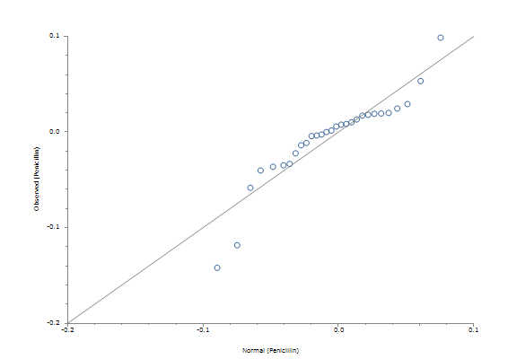

Normality Tests
Menu location: Analysis_Parametric_Normality.
This function enables you to explore the distribution of a sample and test for certain patterns of non-normality.
A normal probability plot is provided, after some basic descriptive statistics and five hypothesis tests. The common hypothesis is that the sample has been drawn at random from a normal distribution. The test of skewness focuses on the symmetry of the distribution; the test of kurtosis examines it's peakedness; and the omnibus chi-square (or k-square) test combines these characteristics (D'Agostino et al., 1990). These tests are calculated using moments about the mean, therefore they are quite sensitive to outliers. You might wish to clean your dataset carefully before exploring its distribution in this way. The two other tests are semi-parametric analyses of variance: Shapiro-Wilk W (Conover, 1999; Shapiro and Wilk, 1965; Royston, 1982a, 1982b, 1991a, 1995) and Shapiro-Francia W' (Shapiro and Francia, 1972; Royston 1983).
StatsDirect requires a random sample of between 3 and 2,000 for the Shapiro-Wilk test, or between 5 and 5,000 for the Shapiro-Francia test. The omnibus chi-square test can be used with larger samples but requires a minimum of 8 observations.
In addition to P values the semi-parametric tests provide V or V' which have a value approximately equal to 1 for samples from normal distributions. Large values of V or V' indicate non-normality. 95% critical values for V lie between 1.2 and 2.4 depending on sample size, and 2.0 and 2.8 for V' (Royston 1991a).
The omnibus chi-square test is updated from the original method to adjust for the fact that the test statistic is not quite distributed as chi-square with 2 degrees of freedom (Royston 1991b).
Significant P values for any of the tests indicate non-normality. There is no perfect test for all forms of non-normality therefore we have provided several here. In addition to the tests you should always examine the normal probability plot. Deviations from the straight line on the plot indicate non-normality. Also look at histograms and spread/dot-plots to examine the distribution of your data. Investigate outlying observations and consider excluding them. You might also wish to transform your data, e.g. into natural logarithms, then examine the normality of the transformed data.
Example
Test workbook (Parametric worksheet: Penicillin).
Consider the following 30 penicillin yields:
| 0.0987 | 0.0000 |
| 0.0533 | -0.0026 |
| 0.0293 | -0.0036 |
| 0.0246 | -0.0042 |
| 0.0200 | -0.0114 |
| 0.0194 | -0.0139 |
| 0.0191 | -0.0222 |
| 0.0180 | -0.0333 |
| 0.0172 | -0.0348 |
| 0.0132 | -0.0363 |
| 0.0102 | -0.0363 |
| 0.0084 | -0.0402 |
| 0.0077 | -0.0583 |
| 0.0058 | -0.1184 |
| 0.0016 | -0.1420 |
To test these data for non-normality using StatsDirect you must first prepare them in a workbook column. Alternatively, open the test workbook using the file open function of the file menu. Then select the normality test from the parametric methods section of the analysis menu. Select the column marked "Penicillin" when prompted.
For this example:
| Normality | |
| Sample name | Penicillin |
| Sample size | 30 |
| Mean | -0.007033 |
| Standard deviation | 0.0454 |
| Skewness | -0.942148, P = 0.025 |
| Kurtosis | 5.373413, P = 0.0156 |
| Royston chi-sq | 9.081201, P = 0.0107 |
| Shapiro-Wilk W | 0.892516, V = 3.416357, P = 0.0055 |
| Shapiro-Francia W' | 0.873776, V' = 4.430639, P = 0.0035 |
| Sample unlikely to be from a normal distribution | |

Here the test statistics are clearly significant at P = 0.05 which rejects the null hypothesis that these data are from a normal distribution. The departures from the straight line in the normal plot demonstrate this pattern in more detail. In fact, these data were from a 2 by 5 factor grouping experiment.